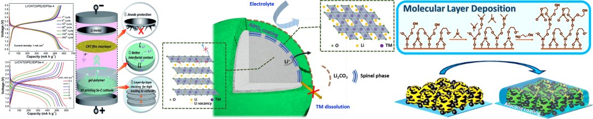
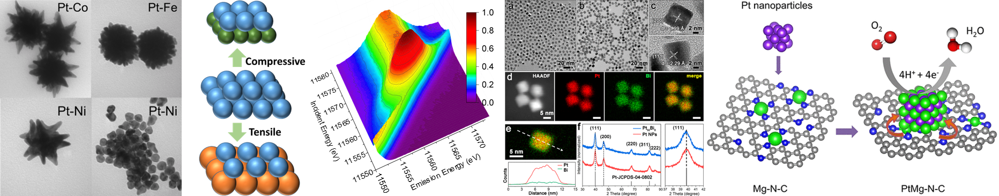
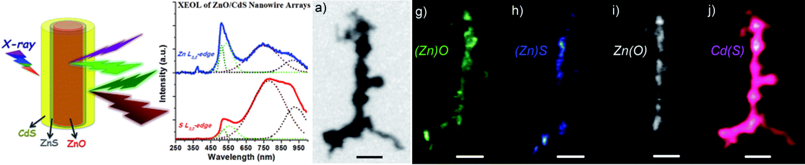
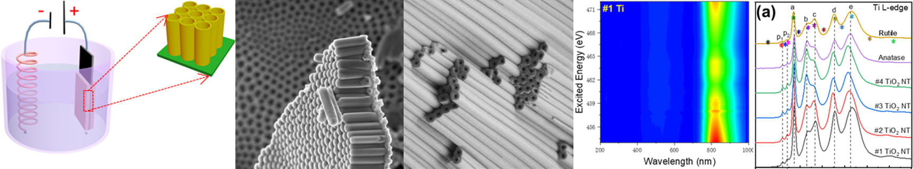

The increasing market demand and the environmental crisis have been driving the battery industry to grow faster than ever before. Modern research has been focused on new types of batteries (Li-S, Li-air, Na-air, all-solid-state lithium batteries, etc.) as well as improvement (SEI, 3D printing, etc.) of current Li-ion batteries. Due to the complexity and atmospheric sensitivity of battery systems, it has been a challenge to track the evolution of the battery components. In-situ/ex-situ synchrotron X-ray techniques (XAS, HAXPES, XES, STXM, etc.), however, have been proven to be extremely powerful tools to study these systems. In-situ/operando XAS, in particular, has the capability to track the electronic and local structures of each element during cycling. These synchrotron X-ray techniques are used to reveal the connection between the chemical structure and battery performance, and thus guide the design of novel batteries.
Related Publications:

Pt-M bimetallic systems including alloys and core-shell structures, which are studied as highly efficient electrocatalysts. By introducing a transition metal M, it is possible to tune the d-band structure of Pt, while reducing the usage of the nobel metal. This is achieved by the so-called strain effect and ligand effect, i.e., the change of the Pt valence band (providing the chemical bonds with adsorbates) due to the change of lattice/local structure. In our study, synchrotron-based X-ray techniques such as X-ray absorption spectroscopy (XAS), X-ray photoelectron spectroscopy (XPS), and X-ray emission spectroscopy (XES) are used to investigate the electronic and local structures of each element.
Related Publications:

1D nano-heterostructures consisting of chemically distinct components are attracting increasing research interest because of the possibility of tuning their chemical, electronic and optical properties at a wide range, and performing multiple functionalities on single nanostructure. Motivated by these prospects, significant progress has been made regarding to the synthesis of various axial, radial, and branched nanoheterostructures via different methods, which provides a testing ground to study the fundamental effect of different components and their interface on the optical and electronic properties of nano-heterostructures. In our research, we use X-ray excited optical luminescence (XEOL) in combination with X-ray absorption near edge spectroscopy (XANES), which have unique advantages in studying the electronic structures and optical properties of semiconductor nanostructures.
Related Publications:

Related Publications: